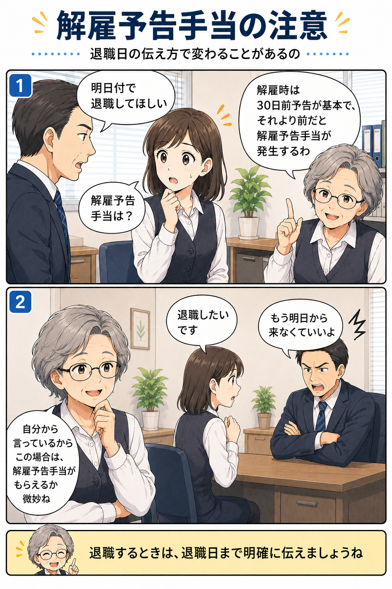

解雇予告手当とは？退職日を会社から指定された時の注意点
会社から一方的に退職日を指定された場合、解雇にあたる可能性があります。 一方で、自分から「退職したい」とだけ伝えた場合は、早い退職日で処理され、解雇予告手当の対象かどうかの判断が難しくなることがあります。

解雇予告手当とは
解雇予告手当とは、会社が労働者を解雇する場合に、一定の予告期間を置かないときに問題になる手当です。 原則として、会社が労働者を解雇する場合は、少なくとも30日前に予告する必要があります。
30日前に予告しない場合や、予告期間が30日に満たない場合は、不足する日数分の平均賃金を解雇予告手当として支払う必要があります。 たとえば、解雇日の10日前に予告された場合は、20日分の平均賃金が問題になります。
会社から「明日付で退職してほしい」と一方的に言われた場合は、 まず「これは解雇なのか」「解雇予告手当はどうなるのか」を確認しましょう。
会社から一方的に退職日を指定された場合
会社から「明日付で退職してほしい」「今月末で退職してほしい」と言われた場合、 その退職が労働者の自由な意思によるものではなく、会社側から一方的に雇用を終了させるものであれば、解雇にあたる可能性があります。
解雇にあたる場合は、30日前の予告や解雇予告手当の問題が出ます。
会社から退職を求められている場合は、基本的に退職届は出さないでください。 どうしても書面を出す場合でも、「一身上の都合」と書かないよう注意が必要です。
自分から「退職したい」とだけ伝えた場合
注意したいのは、自分では1か月後に辞めるつもりだったのに、 会社へ「退職したい」とだけ伝えてしまうケースです。
この場合、会社側から「では明日から来なくていいよ」と処理されると、 自分から退職の意思表示をした形になるため、解雇予告手当の対象かどうかについて、客観的な判断が難しくなります。
つまり、本来は会社が一方的に辞めさせる場合に問題になるはずの30日前予告や解雇予告手当の保護から、 外れてしまう可能性があります。 ここが、退職日を曖昧にしたまま伝えることの怖いところです。
退職を伝える前に、退職日と有給休暇を整理する
自分から退職の意思を伝える場合は、「退職したいです」だけで終わらせず、 いつ退職したいのかまで明確に伝えましょう。
ただし、退職日を伝える前に、有給休暇の残日数も確認しておく必要があります。 有給休暇を使い切って退職したい場合は、仕事の引継ぎ期間と有給消化期間を計算したうえで、 退職日を設定するのが理想です。
- 有給休暇があと何日残っているか確認する
- 仕事の引継ぎに必要な期間を考える
- 有給消化後の日付を退職日にできるか確認する
- 「〇月〇日をもって退職したいです」と退職日まで伝える
- 口頭だけでなく、メールや書面でも記録を残す
退職日と有給休暇は、退職後の収入や手続きにも関わります。 会社任せにせず、自分がいつ退職したいのか、有給をどう使いたいのかまで整理しておきましょう。
まとめ
会社から一方的に退職日を指定された場合は、解雇予告手当の対象になる可能性があります。 一方で、自分から「退職したい」とだけ伝えると、自己都合退職として扱われ、解雇予告手当の対象かどうかの判断が難しくなることがあります。
退職を伝えるときは、退職日まで明確に。 会社から急な退職日を指定された場合は、退職届を出す前に、退職理由と解雇予告手当の扱いを確認しましょう。
参考
関連記事： 自己都合退職と会社都合退職の違い